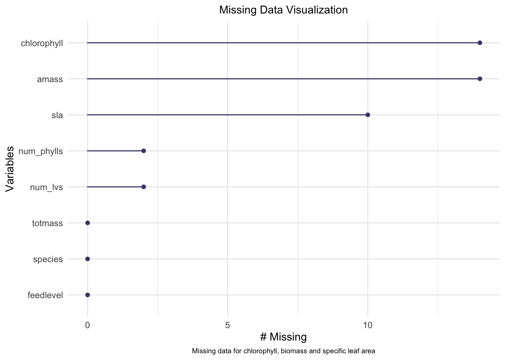
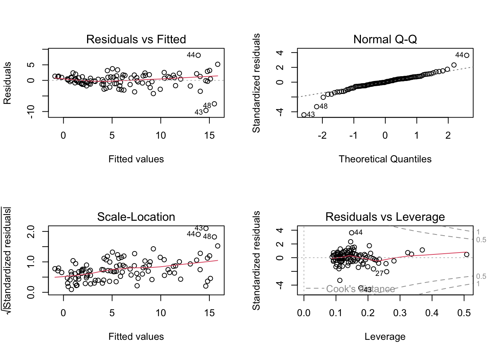
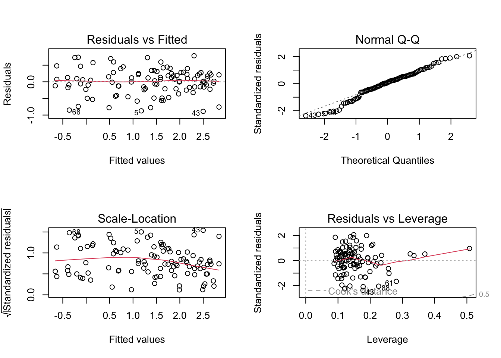
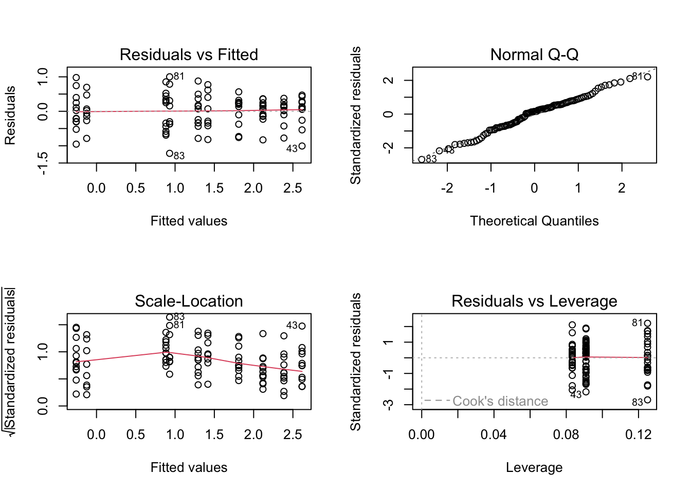
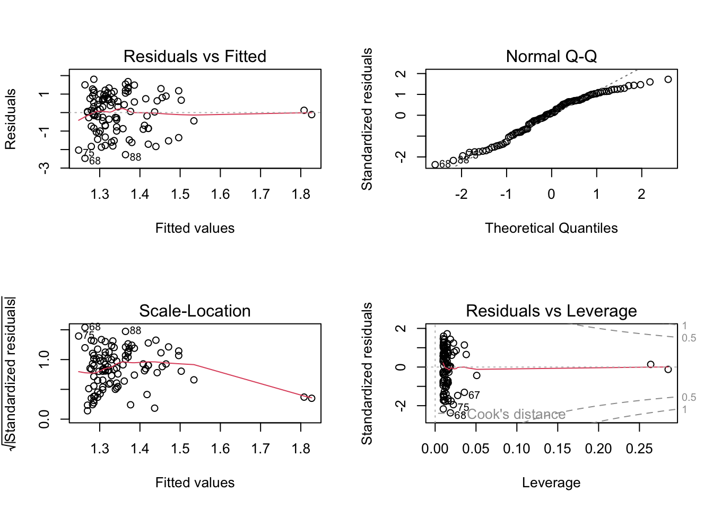
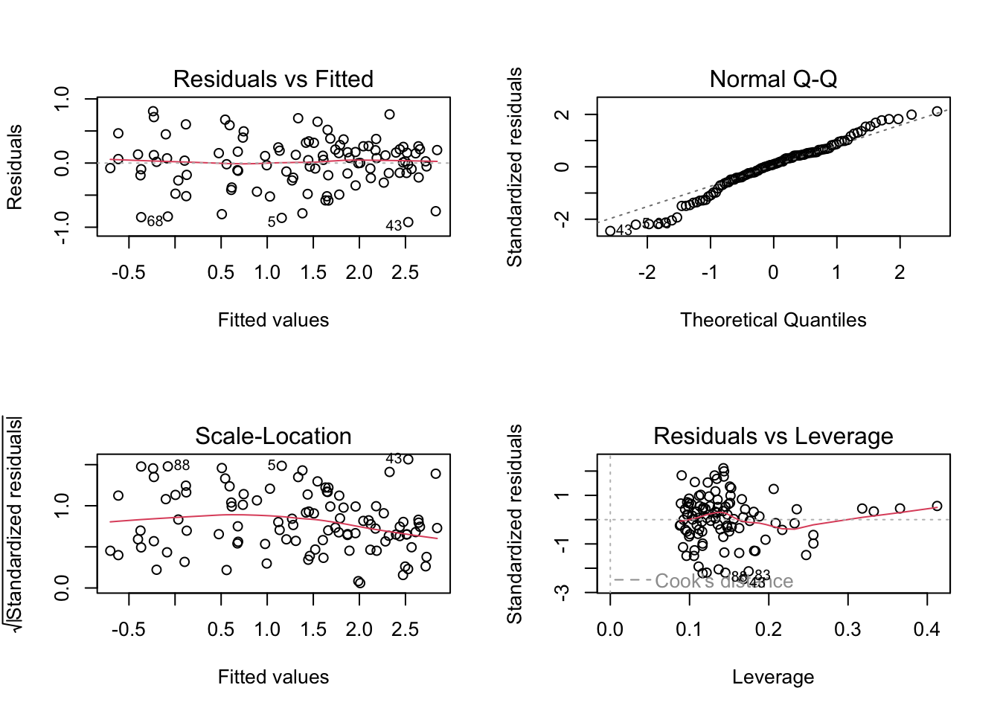

Sarracenia, a carnivorous plant commonly referred to as pitcher plant and indigenous to the North American region, exhibits distinct leaf morphologies that act as entrapments for arthropods (Glenn et al., 2012). The study of these plants is significant in terms of ecological value as they are threatened over much of their geographic range and are studied for their contributions towards wetland health (Wang et al., 2004). An investigation into the predictions around Serracenia biomass by evaluating characteristics like form and function (morphological), and biochemical properties (physiological) along with taxonomy can give insights about growth sequences and could help assist in population assessment while predicting responses under varying environmental conditions (Ellison et al., 2004). This research analysis focuses on Sarracenia’s mass prediction by observing correlations between characteristic such as the number of leaves, feed level and physiological markers including chlorophyll content/photosynthetic rates vis-à-vis its biomass parameters which are hypothesized to be positively associated to answer the question: How do Sarracenia characteristics predict biomass? The analysis of biomass prediction in Sarracenia can therefore enhance conservation efforts and contribute to our understanding of wetland ecosystems.
Methods
The data collection retrieved from the EDI Portal involved a manipulative feeding experiment to test the relationships between morphological and physiological characteristics of carnivorous plants, specifically examining how these relationships resemble those of non-carnivorous plants when nutrients are not limited (Ellison & Farnsworth, 2021). Variables such as photosynthetic rate, chlorophyll fluorescence, growth, architecture, and foliar nutrient and chlorophyll content were investigated. The dataset consisted of 120 observations and 32 variables (Ellison & Farnsworth, 2021), which we have processed using a quarto document in RStudio to select relevant columns for our analysis. Visualizing the presence of missing values in the data allowed us to eliminate N/A’s for testing accuracy. Then, priliminary analysis of the data was performed using Pearson’s r followed by its corresponding correlation plot and pairs plot to visualize the relationships between variables.
Upon generating the visualization plots, we constructed both a null and full model. The former serves the purpose of exhibiting an anticipated absence of variables’ impact on the dataset whereas the latter outlines individual effects that each variable has on the response. As part of the analysis, we conducted assessments pertaining to the assumptions of normality as well as the homoscedasticity of residuals for each model. We then transformed our models into log models in order to meet the assumptions of constant variance and linearity, before creating three additional models (containing different predictors) and selecting the best predictor model for the response. Additional information pertaining to each step of the analysis is given in each sub section below.
Setting up
Loading in libraries
Code
# should haveslibrary(tidyverse)library(here)library(janitor)library(ggeffects)library(performance)library(naniar) library(flextable) library(car)library(broom)# would be nice to havelibrary(corrplot)library(AICcmodavg)library(GGally)library(MuMIn)
Reading in the data
Code
plant <-read_csv(here("data", "knb-lter-hfr.109.18", "hf109-01-sarracenia.csv")) %>%# make the column names cleanerclean_names() %>%# selecting the columns of interestselect(totmass, species, feedlevel, sla, chlorophyll, amass, num_lvs, num_phylls)
c. Visualizing missing data:
We plotted the visualization of missing data to demonstrate that the absence of variables in this dataset can influence the data. The presence of a significant amount of missing data pertaining to chlorophyll, biomass, and specific leaf area can compromise the accuracy of the results obtained from it.
Code
gg_miss_var(plant)

To avoid missing values skewing the analysis of a data, we subset the data by dropping N/A’s to increase the accuracy of our analysis of available data.
We calculated Pearson’s r and visually represented correlation using a correlation plot in order to determine the relationships between numerical variables in our data set. The plot demonstrates the association among diverse variables, where a value of +1 represents a constructive correlation and -1 denotes an opposite correlation (whereas 0 indicates no correlation).
Code
# calculate Pearson's r for numerical values ONLYplant_cor <- plant_subset %>%# all column b/w feedlevel and num_phyllsselect(feedlevel:num_phylls) %>%# cor() = correlationcor(method ="pearson")# creating a correlation plotcorrplot(plant_cor, #change the shape of what's in the cells method ="ellipse",#adding variables over shape addCoef.col ="black")
e. Creating a pairs plot:
We created a visualization of the relationships between variables by using a pairs plot to compare each variable against the others. In this figure, each graphical representation depicts distinct variables charted against each other. The linear plots that run diagonally exhibit the density correlation for individual variables, whereas the graphs presented in both the top and leftmost rows display an association between species and respective variable. In addition, above-diagonal squares depict Pearson correlations, while the below-diagonal plots compare two different variables through scatter plot analysis.
We fit multiple linear models (full and null models) in order to determine how species and physiological characteristics (or lack thereof) predict biomass.
Code
# use 1 as the predictornull <-lm(totmass ~1, data = plant_subset)full <-lm(totmass ~ species + feedlevel + sla + chlorophyll + amass + num_lvs + num_phylls, data = plant_subset )
g. Visual and statistical assumption checks for the full model:
We visually assessed the normality and homoscedasticity of residuals using diagnostic plots for the full model.
Code
# plot of our full modelpar(mfrow =c(2,2))plot(full)

The full model assumption plots show the lack of normality and heteroscedasticity spread of residuals. Therefore, to double check our assumptions, we tested for normality using the Shapiro-Wilk test (null hypothesis: variable of interest (i.e. the residuals) are normally distributed). As well as tested for homoscedasticity using the Breusch-Pagan test (null hypothesis: variable of interest (i.e. the residuals) have constant variance).
Code
# check normality and heteroscedasticity of our full modelcheck_normality(full)
Warning: Non-normality of residuals detected (p < .001).
h. Creating new full and null log objects and checking normality and heteroscedasticity:
Since the assumptions were not met above, we transformed our models into log models in order to meet the assumptions of constant variance and linearity. A second Shapiro-Wilk test and Breusch-Pagan test is performed to validate our transformation.
Code
null_log <-lm(log(totmass) ~1, data = plant_subset)full_log <-lm(log(totmass) ~ species + feedlevel + sla + chlorophyll + amass + num_lvs + num_phylls, data = plant_subset)# plot of our full log modelpar(mfrow =c(2,2))plot(full_log)

Code
# check normality of our full log model using Shapiro-Wilk test check_normality(full_log)
OK: residuals appear as normally distributed (p = 0.107).
Code
# and heteroscedasticity using the Breusch-Pagan testcheck_heteroscedasticity(full_log)
OK: Error variance appears to be homoscedastic (p = 0.071).
i. Model construction with visual and statistical assumption checks for three additional models:
The first additional model uses the predictor variable ‘species’, while the response variable is (log(totmass)). The ‘species’ predictor was chosen to see if the species of the plant affects the total mass of the plant as we hypothesized that different species are genetically predisposed to their height and weight which would affect their total biomass.
Code
model2_log <-lm(log(totmass) ~ species, data = plant_subset)# plotting model 2 log using species as predictor variablepar(mfrow =c(2,2))plot(model2_log)

Code
# checking normality of our model2_log with Shapiro-Wilk testcheck_normality(model2_log)
OK: residuals appear as normally distributed (p = 0.374).
Code
# and heteroscedasticity using the Breusch-Pagan testcheck_heteroscedasticity(model2_log)
OK: Error variance appears to be homoscedastic (p = 0.100).
The second additional model uses the predictor variable ‘chlorophyll’, while the response variable is (log(totmass)). The ‘chlorophyll’ predictor was chosen to see if amount of chlorophyll in the plants affects the total mass of the plant as we hypothesized that the amount of chlorophyll produced by the plant influences biomass due to the associated sugar production in the photosynthetic process.
Code
model3_log <-lm(log(totmass) ~ chlorophyll, data = plant_subset)# plotting model 3 log using chlorophyll as predictor variablepar(mfrow =c(2,2))plot(model3_log)

Code
# checking normality of our model3_log with Shapiro-Wilk testcheck_normality(model3_log)
Warning: Non-normality of residuals detected (p = 0.002).
Code
# and heteroscedasticity using the Breusch-Pagan testcheck_heteroscedasticity(model3_log)
OK: Error variance appears to be homoscedastic (p = 0.546).
The third (last) additional model uses the predictor variables ‘species’, ‘feedlevel’, ‘sla’, ‘chlorophyll’, ‘num_lvs’ and ‘num_phylls’ , while the response variable is (log(totmass)). These predictors were chosen to see how the overall combination of these predictors affects the total biomass of the plant as we hypothesized that total biomass is influenced by multiple predictors rather than only one. Hence, as opposed to the full model, ‘amass’ was omitted in this model to observe the influence of its absence on the response variable.
Code
model4_log <-lm(log(totmass) ~ species + feedlevel + sla + chlorophyll + num_lvs + num_phylls, data = plant_subset)#plotting model 3 log using chlorophyll as predictor variablepar(mfrow =c(2,2))plot(model4_log)

Code
# checking normality of our model4_log with Shapiro-Wilk testcheck_normality(model4_log)
OK: residuals appear as normally distributed (p = 0.075).
Code
# and heteroscedasticity using the Breusch-Pagan testcheck_heteroscedasticity(model4_log)
OK: Error variance appears to be homoscedastic (p = 0.054).
j. Evaluating multicollinearity:
We assessed multicollinearity by computing the generalized variance inflation factor for the full model and found that species exhibits the greatest GVIF value, indicating a substantial level of multicollinearity with other predictor variables. The inflated factors score is 1.23, which implies that due to multicollinearity, the standard error has increased by a factor of 1.23. Consequently, interpreting both individual effects of predictor variables and response variable becomes more difficult as species showcases an elevated degree of collinear association between these parameters.
We compared our five log models using Akaike’s Information criterion (AIC) in order to observe which set of predictors best predicts the response. The least complex that best predicts the response is the predictor with the lowest value, which is Model 4 in this case (AIC = 132, in comparison to AIC = 134 for the Full Model).
Code
# comparing all five log models (full, null, model 2, model 3 and model 4)# MuMIn call for table of Akike's Information criterion values (AIC) valuesMuMIn::AICc(full_log, null_log, model2_log, model3_log, model4_log)
# model selection table (tells me which predictor is least complex *and lower*)MuMIn::model.sel(full_log, null_log, model2_log, model3_log, model4_log)
We found that the fourth model (model4_log) including the ‘feedlevel’, ‘sla’, ‘chlorophyll’, ‘num_lvs’ and ‘num_phylls’ predictors best predicted total biomass in Sarracenia. As shown in the table summary below,
# table woth confidence intervals table <-tidy(full_log, conf.int =TRUE) %>%# change the p-value number if they are really small# change the estimates, standard error, t-statstics to round to ___ digits# using mutate# make into a flextableflextable() %>%# fit it to the viewerautofit()table
term
estimate
std.error
statistic
p.value
conf.low
conf.high
(Intercept)
-1.339043200
0.597726532
-2.2402271
0.027624109607483009
-2.527089405
-0.1509969955
speciesalata
1.113162580
0.184020930
6.0491086
0.000000035633453091
0.747401056
1.4789241035
speciesflava
1.404562038
0.262954818
5.3414577
0.000000728606298866
0.881910865
1.9272132117
speciesjonesii
0.319652351
0.196426010
1.6273423
0.107280978897063520
-0.070765614
0.7100703152
speciesleucophylla
1.709035391
0.227608275
7.5086698
0.000000000048774953
1.256639298
2.1614314841
speciesminor
0.389310367
0.187903472
2.0718636
0.041239074384119417
0.015831871
0.7627888636
speciespsittacina
-1.645197874
0.207034720
-7.9464830
0.000000000006356134
-2.056701798
-1.2336939506
speciespurpurea
-0.364347584
0.254380246
-1.4322951
0.155642631385408292
-0.869955868
0.1412607001
speciesrosea
-0.947383285
0.260494896
-3.6368593
0.000466976667424192
-1.465145097
-0.4296214723
speciesrubra
0.875341885
0.196361315
4.4578123
0.000024573993550445
0.485052508
1.2656312619
feedlevel
-0.474255269
0.234492879
-2.0224719
0.046198841611705246
-0.940335257
-0.0081752817
sla
-0.002493083
0.001160230
-2.1487826
0.034429589763780563
-0.004799167
-0.0001869994
chlorophyll
0.004368330
0.001189484
3.6724575
0.000414110175835848
0.002004101
0.0067325586
amass
0.002337656
0.002988210
0.7822929
0.436166480376765753
-0.003601736
0.0082770479
num_lvs
0.091763935
0.022413350
4.0941643
0.000094562482452723
0.047214976
0.1363128941
num_phylls
-0.039585071
0.051713890
-0.7654630
0.446067519262093981
-0.142372027
0.0632018848
use ggpredict()to backtransform estimates back to exponential (not log) to report it on the scale of the original variables:
All else held constant (of the adjusted levels in purple), total biomass of all species to remain within the range of Confidence Interval
References
Ellison, A. M., Buckley, H. L., Miller, T. E., & Gotelli, N. J. (2004). Morphological variation in Sarracenia purpurea (Sarraceniaceae): geographic, environmental, and taxonomic correlates. American Journal of Botany, 91(11), 1930–1935. https://doi.org/10.3732/ajb.91.11.1930
Wang, Hamrick, J. ., & Godt, M. J. . (2004). High genetic diversity in Sarracenia leucophylla (Sarraceniaceae), a carnivorous wetland herb. The Journal of Heredity, 95(3), 234–243. https://doi.org/10.1093/jhered/esh043